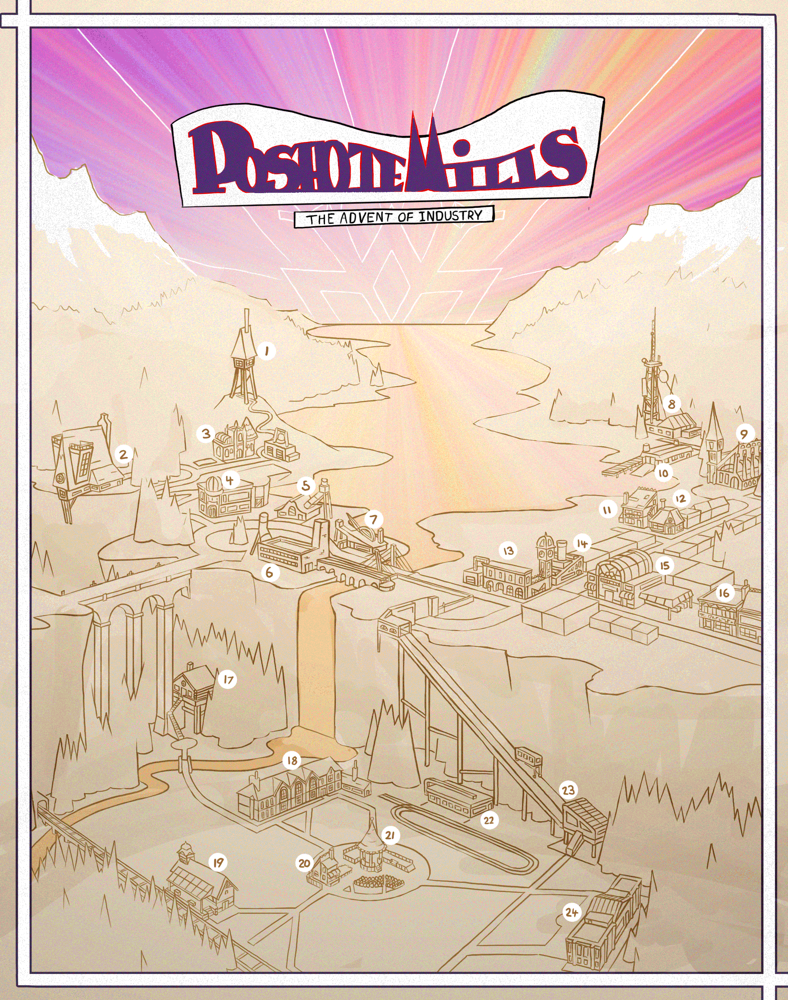
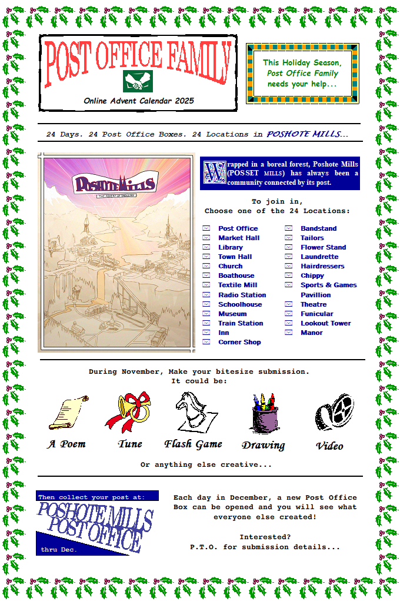
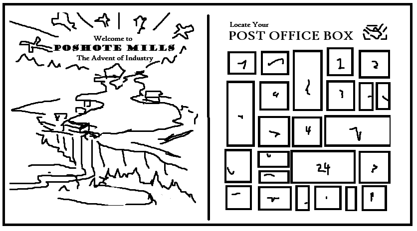
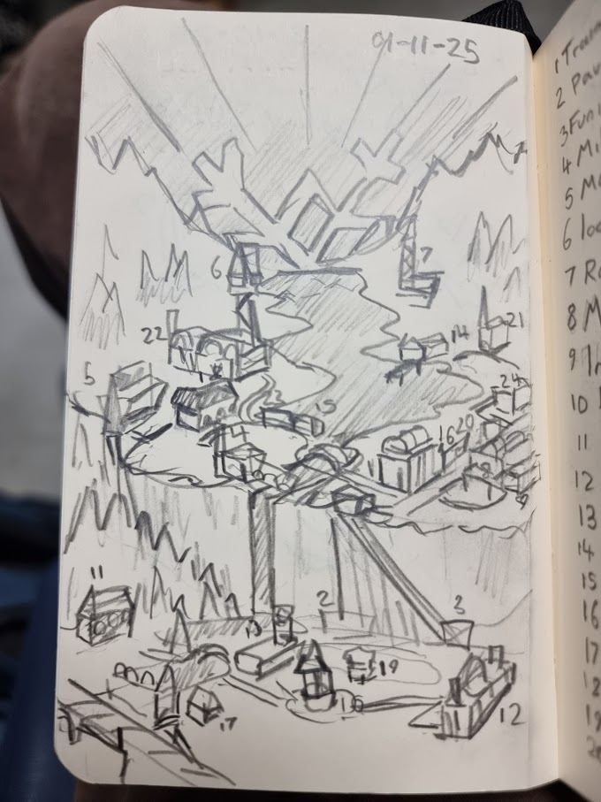
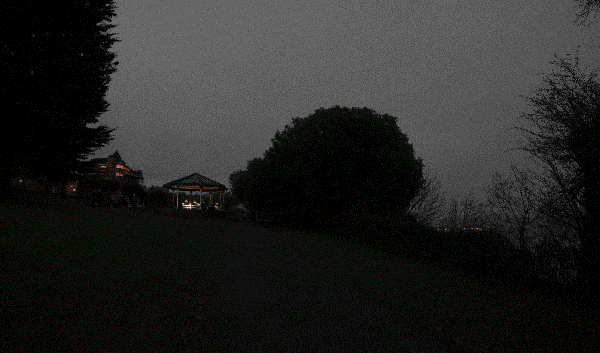
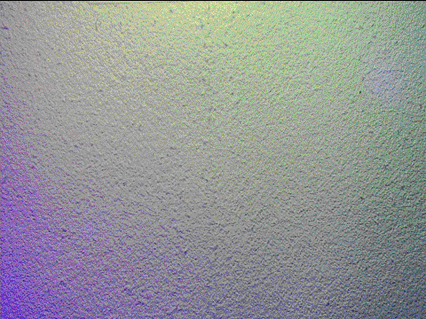
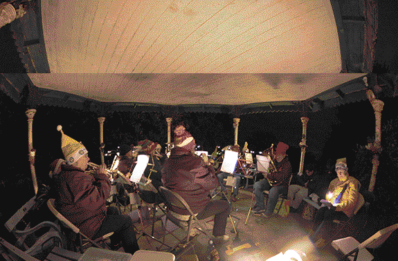
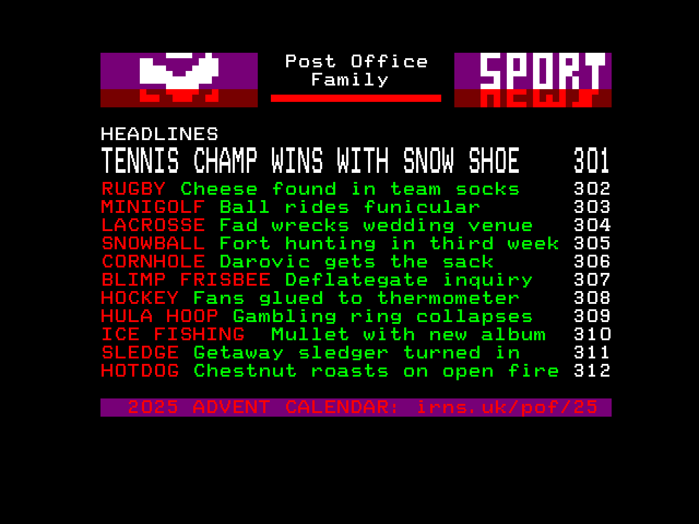

This was a collaborative advent calendar I ran for December 2025.
Click here to check it out.
Growing up, I loved all the silly online advent calendars that would roll around at the end of the year, so I decided to make my own, but I knew I would need some help. Twenty fantastic surprises were made by friends of mine, and the remaining four by myself. I also was behind the concept, map art, interface and music. This was super fun project to work on, and I was blown away by the creativity of the contributors, who you can find credited on their days. Advent is over, but every December the doors will lock again.

The annotated map of Poshote mills before animation

Demonstration of the advent calendar.
Music
Day
Day (Zoomed Out)
Night
Concept
I began planning the concept in September, and drew Poshote Mills' map through October and early November.

The information sheet sent out to participants

The initial concept sketch for the design of Poshote Mills and the layout of the calendar

Sketch from a trip to London to finalise the locations.
Contributions

The Marie Curie bandstand shakes in a gif for day 16: Bandstand

Christmas biscuit decorating animation for day 23: Town Hall

Barry Brass Band wobble in a gif for day 16: Bandstand

My teletext parody for day 13: Sports & Games Pavilion